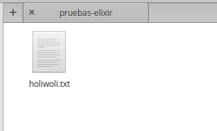
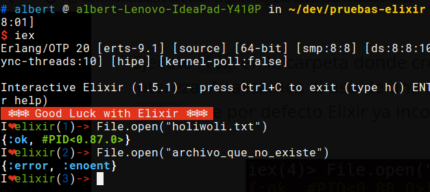
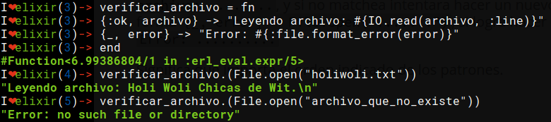

Las funciones anonimas tienen la siguiente forma: fn(<parametro1>, <parametro2>, ....) -> <ejecucion y retorno> end
Crearemos funciones en IEx y las guardaremos en una variable para posteriormente utilizarlas:
iex> velocidad = fn (distancia) -> :math.sqrt(2 * 9.81 * distancia) end #Function<6.52032458/1 in :erl_eval.expr/5> ## El retorno nos sirve para corroborrar que hemos creado una funcion y ## no resulto en error. iex> sum = fn (a, b) -> a + b end #Function<12.17052888 in :erl_eval.expr/5> iex> sum.(1, 2) 3
Ahora podemos separar en piezas nuestras funciones dentro de multiples lineas, esto hace que sea más legible. IEx mantiene la linea abierta hasta que tipees end. El ejemplo anterior de esta manera:
##En este caso obviamos englobar en parentesis ##los parametros porque solo existe uno solo. iex> velocidad = fn ...> distancia -> :math.sqrt(2 * 9.81 * distancia) ...> end #Function<6.52032458/1 in :erl_eval.expr/5> iex> velocidad.(10) 14.007141035914502
Cada vez que evaluamos una funcion anonima, un patron se matchea con la data suministrada, de lo cual deriva en asignaciones, para que luego sean utilizadas. Esto significa que se puede hacer matcheos de mayor complejidad Ejemplos:
##En este caso se esta pasando un solo parametro que es una tupla y se esta devolviendo otra tupla con el orden invertido.
iex> intercambio = fn
...> {primero, segundo} -> {segundo, primero}
...> end
#Function<6.52032458/1 in :erl_eval.expr/5>
iex> intercambio.({6, 8})
{8, 6}
Para el siguiente ejemplo, en mi carpeta creo un archivo holiwoli.txt que no es necesario que tenga contenido.

**
Ejecuto iex en la carpeta donde se ubica holiwoli.txt y ejecuto lo siguiente. Analizamos el uso de una funcion llamada open, dentro de la libreria File, que por defecto Elixir ya incorpora.

Al ejecutar la funcion, esta retorna una tupla, tal que su primer elemento es un atomo que representa el exito o fracaso de la operación, y el segundo es segun el primer termino, un identificador unico de proceso ó un mensaje de error. ** Ahora creamos una funcion anonima que procese ese resultado y dependiendo del caso realiza una accion u otra.
iex> verificar_archivo = fn
...> {:ok, archivo} -> "Leyendo archivo: #{IO.read(archivo, :line)}"
...> {_, error} -> "Error: #{:file.format_error(error)}"
...> end
#Function<6.52032458/1 in :erl_eval.expr/5>
**
:ARTICLE: smaller

Lo que hace la función es verificar el primer primer patron que en este caso es {:ok, archivo}. Si consigue hacer el match {:ok, archivo} = File.open(".......") imprime el texto Leyendo archivo: ........, y si no matchea intentara hacer un nuevo match con {_, error} de la siguiente forma {_, error} = File.open("......."), si logra hacer este ultimo match se imprimira el texto Error: ..........
Significa que importa el orden de las definiciones.
**
:ARTICLE: smaller
Hemos observador hasta el momento que para crear una funcion anonima es necesario definir 2 partes importantes:
Ahora, existe algo más practico que toma en concideracion el orden de los parametros que se estan tomando. Eso más practico es el uso de & para definir funciones anonimas.
Aqui un ejemplo en la forma como se utilizan.
iex> doble = &(&1 * 2) #Function<6.52032458/1 in :erl_eval.expr/5> iex> doble.(7) 14
&(...) se refiere a la creacion de una funcion anonima. &1 representa el primer parametro obtenido al evaluar la funcion. Entonces &(&1 * 2) es una funcion anonima de aridad 1 que toma su primer parametro (primer y unico parametro) y devuelve el doble.
**
&(....) tiene las siguientes variaciones:
&{....}: Funcion anonima que crea una tupla como resultado&[....]: Funcion anonima que crea una lista como resultadoEjemplos:
iex> cociente_residuo = &{ div(&1,&2), rem(&1,&2) }
#Function<6.52032458/1 in :erl_eval.expr/5>
iex> cociente_residuo.(13, 5)
{2, 3}
iex> lista = &[&1, &1 * 2, &1 * 3]
#Function<6.52032458/1 in :erl_eval.expr/5>
iex> lista.(5)
[5, 10, 15]
Sabemos que hace &(....), pero para que sirve?
Sirve crear funciones anonimas como parametros de otras funciones:
Ejemplos:
iex> Enum.map [1,2,3,4], &(&1 + 1) [2, 3, 4, 5] iex> Enum.map [1,2,3,4], &(&1 * &1) [1, 4, 9, 16] iex> Enum.map [1,2,3,4], &(&1 < 3) [true, true, false, false] iex> Enum.filter [1,2,3,4], &(&1 <= 3)
Crear funciones anonimas en sus 2 formas (fn, &, eso si esto es posible) que den estos resultados:
iex> saludo.(%{nombre:"Albert", edad: 25})
"Hola Albert, tienes 25 años"
iex> proceso.(1..40)
[1,4,9,16,25] # Elementos al cuadrado y luego filtrados (solo menores iguales a 30)
Una vez que tu codigo crece, es una necesidad real estructuralo. Partes tu codigo en funciones con nombre y los organizas dentro de modulos.
Los modulos te dan la habilidad de guardar, encapsular, compartir y manejar tu codigo de la manera más eficiente.
Cada modulo tiene extension .ex ó .exs (.ex es para archivos que sera compilados y .exs son para crear scripts ó mejor dicho archivos que se interpretan en beam pero que no es necesario que se compilen).
Nota: Nombres de Archivos que representen modulos respetan la regla del camello (CamelCase).
Creamos el archivo caida.exs dentro de nuestra carpeta y con el editor de texto escribimos lo siguiente:
#Archivo: caida.exs
defmodule Caida do
def velocidad(altura) do
:math.sqrt(2 * 9.81 * altura)
end
end
En el codigo escrito podemos ver que existe un modulo Caida, tal que engloba entre do ...... end a una funcion con nombre velocidad. Esta funcion velocidad, recibe un parametro altura, que al ser evaluada se matchea para luego ejecutarse el contenido entre do ... end que es :math.sqrt(2 * 9.81 * altura)
Existen 2 formas de usar el codigo en archivos.
iex <nombre de archivo> para luego ejecutarlo$ iex caida.exs iex> Caida.velocidad(100) 44.294469180700204
c <"nombre de archivo">iex> c "caida.exs" [Caida] iex> Caida.velocidad(100) 44.294469180700204
En funciones anonimas teniamos la posibilidad de crear multiples cuerpos ó por decirlo de otra forma, que la funcion responda segun los parametros de entrada.
Lo mismo tenemos en funciones con nombres.
Ejemplo:
#factorial.exs defmodule Factorial do def de(0), do: 1 def de(n), do: n * de(n-1) end
**
#factorial.exs defmodule Factorial do def de(0), do: 1 def de(n), do: n * de(n-1) end
Cuando el parametro es 0, el resultado es 1.
Cuando el parametro no es 0, almacenamos el parametro de entrada en la variable n y luego evaluamos n por el factorial de n menos 1.
**
#factorial1.exs iex> c "factorial.exs" [Factorial] iex> Factorial.de(3) 6 iex> Factorial.de(7) 5040 iex> Factorial.de(10) 3628800
#fibo.exs
defmodule Fibonacci do
def de(0), do: 0
def de(1), do: 1
def de(n) do
de(n-1) + de(n-2)
end
end
when nos ayuda a verificar los tipos de las variables que hacen match.
#lista_numero.exs
defmodule ListaNumero do
def que_es(x) when is_number(x) do
"#{x} es un numero"
end
def que_es(x) when is_list(x) do
"#{inspect(x)} es una lista"
end
end
iex> c "lista_numero.exs" [ListaNumero] iex> ListaNumero.que_es(5) "5 es un numero" iex> ListaNumero.que_es([5]) "[5] es una lista"
LIMITACIONES: Solo estan permitidas estas Guardias dentro de when. O quizas no exista limitación.
iex> fizzbuzz(15) #Multiplo de 5 y 3
"Fizzbuzz"
iex> fizzbuzz(6) #Multiplo de 3
"Fizz"
iex> fizzbuzz(10) #MUltiplo de 5
"Buzz"
iex> fizbuzz("Holi")
"Qué paso amiguito?"
Que pasa si queremos elevar al cuadrado los elementos de una lista para luego filtrar a los que sean menores a 40. Tendriamos que usar la siguiente funcion:
iex> lista = 1..10 1..10 iex> cuadrado = Enum.map(lista, &(&1 * &1)) [1, 4, 9, 16, 25, 36, 49, 64, 81, 100] iex> filtrado = Enum.filter(cuadrado, &(&1 < 40)) [1, 4, 9, 16, 25, 36]
Entendemos este codigo, pero almacenamos muchas variables temporales (codigo poco eficiente).
Ahora, si no queremos almacenar variables temporales podemos hacer lo siguiente:
iex> filtrado = Enum.filter(Enum.map(1..10, &(&1 * &1)), &(&1 < 40)) [1, 4, 9, 16, 25, 36] ## Lo siento, por hacerles ver algo tan feo.
Funciona, pero es dificil de leer y escalar, facilmente puede ocasionar errores. No es elegante.
* Muchos lenguajes nos obligan a tomar una decision sobre cual usar. Ser poco productivo pero hacer codigo eficiente ó ser productivo pero tu codigo es ineficiente. calma.jpg
** Siganme los buenos.
Una solucion elegante es pensar en funciones como transformaciones de información. Tal que el primer parametro de una funcion es el elemento a transformar, y los demas parametros son configuraciones a la transformación que se da.
Resumiendo en una sola linea. En ves de usar f(val,a,b), usamos val |> f(a,b).
Aplicando a nuestro ejemplo.
iex> resultado = 1..10 |> Enum.map(&(&1*&1)) |> Enum.filter(&(&1 < 40)) [1, 4, 9, 16, 25, 36]
**
Gracias ˊ・ω・ˋ